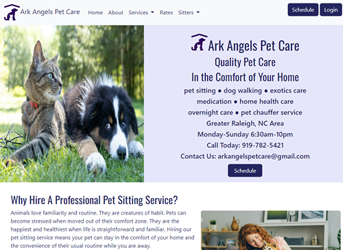
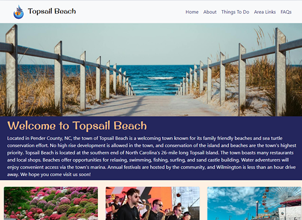

Brian Thompson
Aspiring Web Developer
Hi, I'm Brian. I am an aspiring web developer.
I am currently working towards my AAS Degree in Web Development at Wake Tech Community College. In my courses, I am learning to create websites using HTML, CSS, and JavaScript. In addition, my coursework includes courses in PHP, Python, C#, the MERN Stack, React App, Active Server Pages, and SQL. I hope to find a career where I can use the skills that I am gaining to create responsive, user-friendly, accessible websites.
Featured Projects
View selected projects below. More information can be found at my ReactApp portfolio.
Ark Angels Pet Care Website
This project was a redesign of a website for a pet sitting service business, Ark Angels Pet Sitting, in Raleigh, NC. The site was redesigned with a mobile first, responsive approach. The project was coded using HTML, CSS, JavaScript, and Bootstrap.
View projectTopsail Beach Website
This project was a redesign of a website for Topsail Beach located on the coast of North Carolina for my mobile design course at Wake Tech Community College. The site was redesigned using HTML, CSS, and Bootstrap.
View projectWork Experience
When I am not learning about web development in my college courses, I can usually be found at the Triangle Aquatic Center in Cary, NC, where I am working on my soft skills as a USA Swimming club coach.
Swim Coach
TAC Titans
3/2022-Present
As an age group USA Swimming coach, I manage and train groups of 12 and under competitive swimmers.
- Lead...instructional swim practices for competitive swimmers age 12 and under
- Responsible for...supervision and instruction of multiple groups of 30+ swimmers during practices and meets
- Communicate with...parents, athletes, and coaching staff to maintain a consistent, motivated team environment
Education
Wake Tech Community College - Raleigh
Working Towards AAS Degree in WEb Development, 2021-present
Computer Programming Certificate